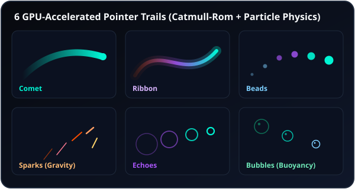
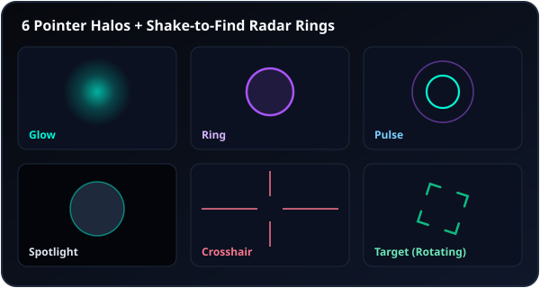
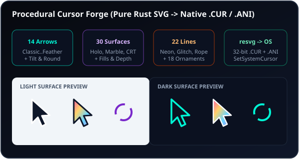
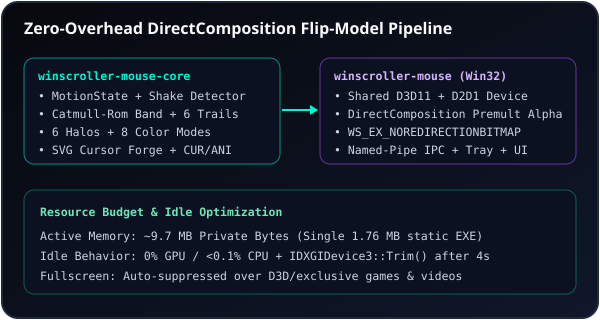

6 GPU Pointer Trails
Comet, Ribbon, Beads, Sparks, Echoes, and Bubbles — using Catmull-Rom curve smoothing and additive non-overlapping quads for zero seam artifacts.
A faithful, hardware-accelerated Rust clone of omarchy-plume for Windows — combining a 14 × 30 × 22 × 18 procedural Cursor Forge with silky-smooth Catmull-Rom pointer trails, halos, 8 color modes, and Shake-to-Find.
Move your cursor inside the canvas (or shake rapidly for Shake-to-Find!)

Comet, Ribbon, Beads, Sparks, Echoes, and Bubbles — using Catmull-Rom curve smoothing and additive non-overlapping quads for zero seam artifacts.

Glow, Ring, Pulse, Spotlight cutout, Crosshair, and rotating Target with Always / While Moving / When Still triggers plus Shake-to-Find radar rings.

14 Arrows, 30 Surfaces, 22 Lines, 18 Ornaments, 5 Shadows, and animated 12-frame busy spinners — rasterized in pure Rust via resvg into native Windows .cur & .ani files.

Shared Direct3D11/Direct2D/DirectComposition device, WS_EX_NOREDIRECTIONBITMAP, fullscreen game auto-hide, and IDXGIDevice3::Trim() when idle.
# Download & launch standalone statically linked binary (no VC++ runtime needed)
Invoke-WebRequest -Uri "https://github.com/fruitsaladwindowsai-zammy/Winscroller-Mouse/releases/download/latest/winscroller-mouse.exe" -OutFile "$HOME\Downloads\winscroller-mouse.exe"
& "$HOME\Downloads\winscroller-mouse.exe" settings
# Script via local Named-Pipe IPC
winscroller-mouse.exe look neon
winscroller-mouse.exe cursor candy
winscroller-mouse.exe find